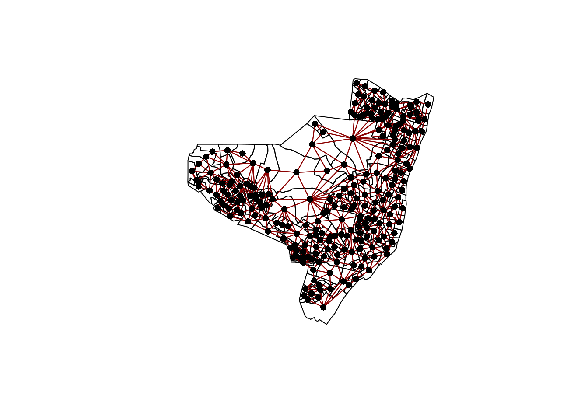

0.1 Usando o rstan para modelagem de Olinda
0.1.1 Introdução
Esse é uma pequena demostração de como o stan permite realizar Inferencia Bayesiana no R. Vamos ajustar um modelo espacial do tipo CAR para dos dados de Olinda.
Em primeiro lugar vamos carregar as bibliotecas a serem utilizadas e definir uma função auxiliar!
library(sf)
library(rstan)
library(spdep)
library(ggplot2)
# opções para o Stan
rstan_options(auto_write = TRUE)
options(mc.cores = parallel::detectCores())
rescale <- function(x) {(x - mean(x))/(quantile(x,0.975) - quantile(x,0.025))}Antes de mais nada como na aula anterior vamos baixar o ZIP contendo os arquivos no formato shape e ler os setores de Olinda no formato sf
#opções para o Windows não se perder
options(download.file.method='libcurl',url.method='libcurl')
#local dos dados na rede
local <- 'https://gitlab.procc.fiocruz.br/oswaldo/eco2019/raw/master/dados/'
tmpdir <- tempdir()
download.file(paste0(local,'olinda.zip'),
destfile = paste0(tmpdir,'/olinda.zip'))
unzip(zipfile = paste0(tmpdir,'/olinda.zip'),exdir = tmpdir)
dir(tmpdir)
olinda.sf <- read_sf(paste0(tmpdir,'/olinda.shp'), crs = 5535)
olinda.sp <- as_Spatial(olinda.sf)Criando a matriz de vizinhaça por contiguidade.
## Neighbour list object:
## Number of regions: 241
## Number of nonzero links: 1324
## Percentage nonzero weights: 2.279575
## Average number of links: 5.493776
data {
int N;
vector[N] x;
vector[N] y;
matrix<lower=0>[N,N] W;
vector<upper=1>[N] e;
matrix<lower=0,upper=1>[N,N] I;
}
parameters {
real beta;
real<lower=0,upper=100>
alpha;
real<lower = 0> sigma;
real<lower=-1,upper=1> lambda;
}
model {
y ~ multi_normal_prec(alpha + x * beta, crossprod(I - lambda * W)/(sigma*sigma));
}set.seed(34256)
x <- olinda.sf$DEPRIV
y <- olinda.sf$CASES
N <- nrow(olinda.sf)
I <- diag(N)
W <- nb2mat(viz)
e <- rep(1,N)
car_olinda <- stan('olinda_car.stan')## Loading required package: raster##
## Attaching package: 'raster'## The following object is masked from 'package:rstan':
##
## extract## recompiling to avoid crashing R session